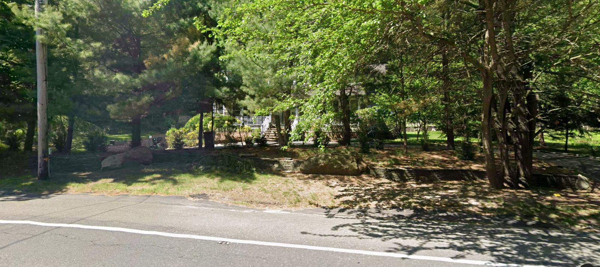

Lot
1.61 ac
70,190 sq ft
A 1.61-acre lot with a 2002 house in Stony Brook, zoned B1 (22,500 sq ft minimum). Last listed at $1,295,000; expired without a sale or relist. Supports 3 lots under town zoning and the county septic rule. Last deed recorded 2023.

| Step | Figure | Basis |
|---|---|---|
| Lot area | 70,190 sq ft · 1.61 ac | County tax map parcel outline |
| Wetlands on the lot | None mapped | County freshwater + tidal wetland maps |
| Net buildable area | 70,190 sq ft | |
| Zoning minimum per house | 22,500 sq ft | B1 · Brookhaven zoning sheet 04-20-26 · §85-177 |
| Septic minimum per house | 20,000 sq ft | Groundwater Zone VIII · §760-608(B) |
| Binding rule | Town zoning | 22,500 sq ft per house |
| Lots by right | 3 | 2–3 lots typically work with a flag lot or shared driveway |
Yield: 3 conforming lots before roads, frontage and flag-lot requirements. Lots under 40,000 sq ft require public water (§760-609). Confirm with a surveyor's yield map.
Timing: the owner listed at $1.29M and did not sell. The listing agreement has ended.
| Result |
|---|
| No other Suffolk parcel under this owner's name and mailing address. |
| Address | Lot | Use | Owner |
|---|---|---|---|
| 104 North Country Road | 2.10 ac | Vacant residential land | LLC |
| 17 Wellington Drive | 1.60 ac | — | — |
| No street address | 0.68 ac | Vacant residential land | LLC |
| 11 Wellington Drive | 0.65 ac | One-family home | Individual · lives there |
| 9 Wellington Drive | 0.56 ac | One-family home | Individual · lives there |
| Address | Lot | 2025 market value | Distance |
|---|---|---|---|
| 1.99 ac | $2,041,250 | 0.17 mi | |
| 19a Cedar Drive | 1.12 ac | $927,500 | 0.46 mi |
| 1.98 ac | $2,011,875 | 1.23 mi | |
| 17 Barn Lane | 1.94 ac | $1,850,625 | 1.3 mi |
| 35 Farm Road | 2.42 ac | $1,983,125 | 1.39 mi |
5 new houses built on vacant lots within 1.5 miles since 2021; median 2025 assessed market value $1,983,125. Assessed values trail sale prices.
| Result |
|---|
| No residential splits within 3 miles on the 2021 → 2025 rolls. |
Deal structure: acquire at subdivision value from an owner who has already tried to sell, subdivide into 3 conforming lots, and build to the local new-construction market (median new house nearby: $1,983,125 assessed).
Estimates Lot counts assume the full parcel minus mapped wetlands, before roads and frontage, and need a surveyor's yield map. Owner names are masked; the full record, the phone and the trace are walked through on a call. Pulled Oct 15, 2026 from Suffolk County and New York State public records, town zoning maps and an Oct 4 MLS snapshot.